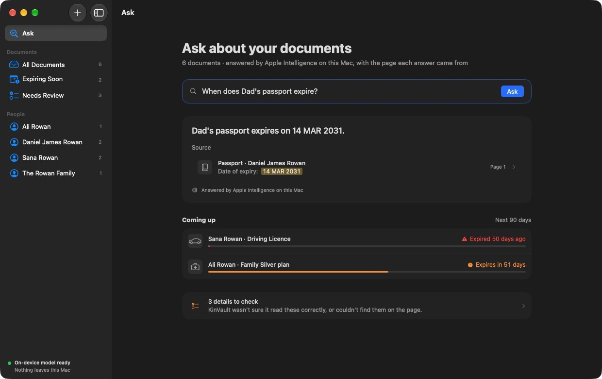
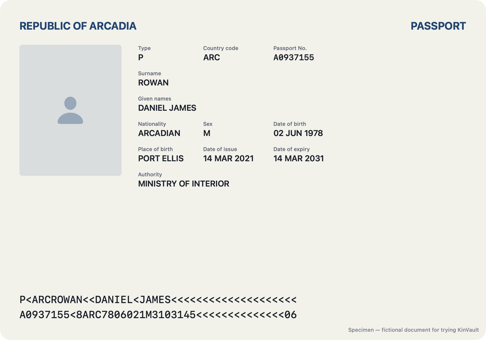
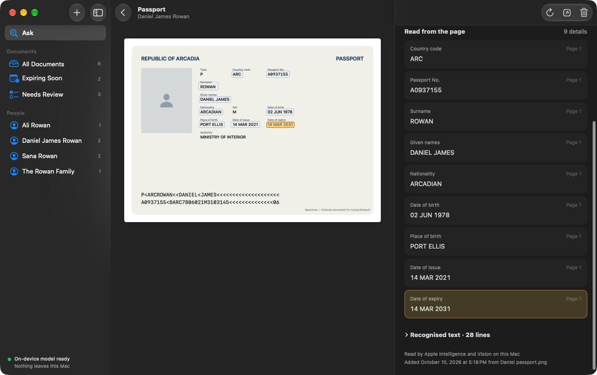
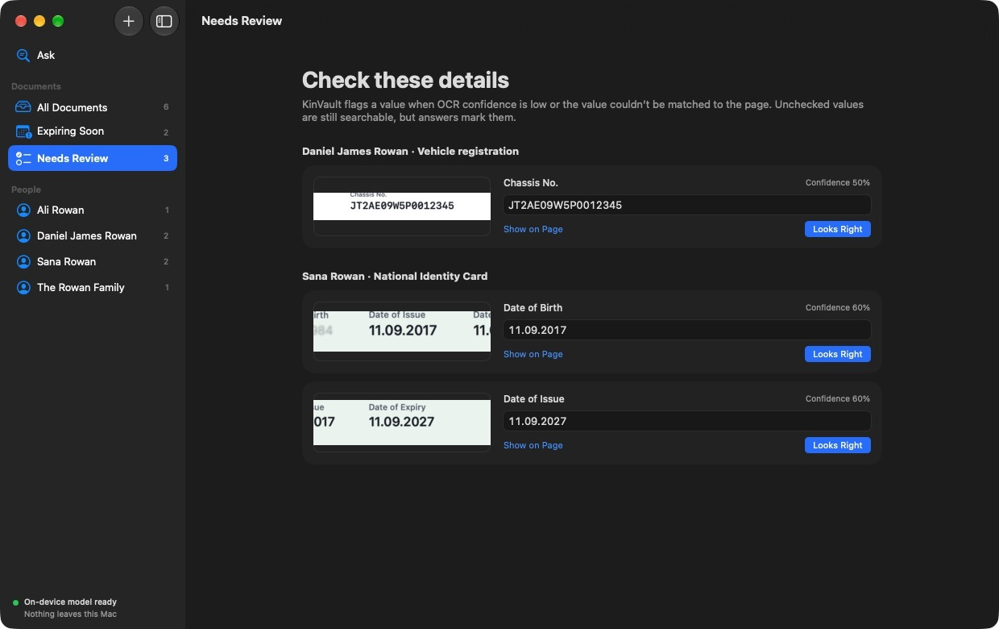
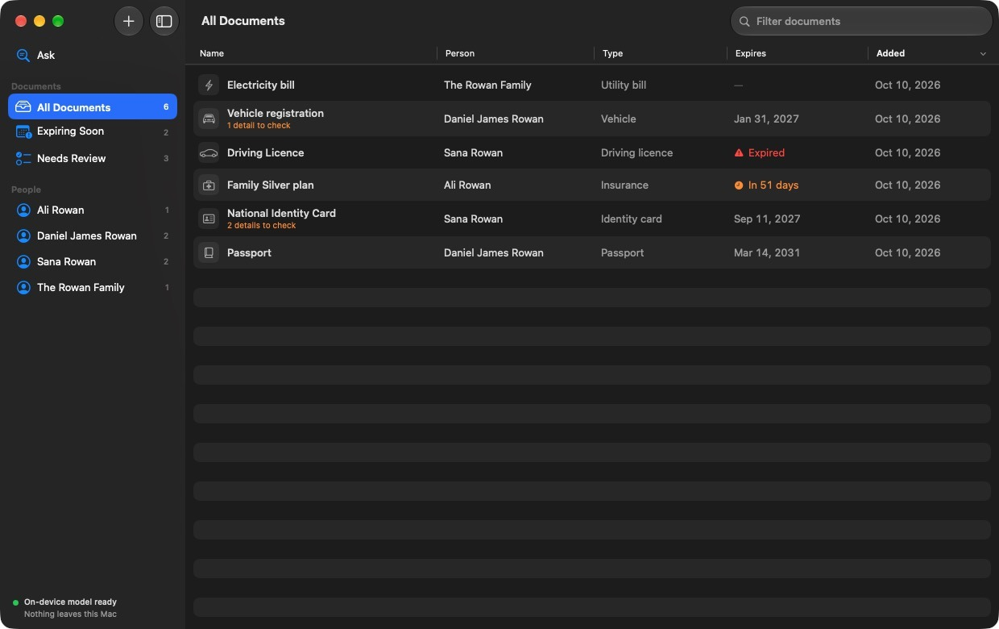

For Mac · macOS 26 or later · Apple silicon
Ask your family’s documents a question.
KinVault reads passports, ID cards, insurance cards and bills with Apple’s on-device text recognition and Apple Intelligence. Every answer comes with the exact spot on the page it was read from.
Nothing leaves your Mac. The app has no network access at all.

Try it on a specimen passport
This is one of the fictional sample documents that ships with the app. The highlighted boxes are the real coordinates KinVault stored after reading it — pick a question to see where each answer comes from.
Dad’s passport expires on 14 MAR 2031.
- Document
- Passport · Daniel James Rowan
- Field
- Date of expiry
- Read as
- 14 MAR 2031
- Where
- Page 1
Answered by Apple Intelligence on this Mac · valid for 4 more years

How a document gets read
Four steps, all on your Mac. Drop in a PDF or a photo and it’s filed in a few seconds.
-
Vision finds the text
Apple’s Vision framework recognises every line on every page, with its position and a confidence score.
-
Apple Intelligence fills in the form
The on-device Foundation Model reads the text and returns structured details: who it belongs to, the type, key numbers and dates.
-
Every value is found on the page
KinVault matches each value back to the recognised text and checks it sits beside its own label. If it can’t, it doesn’t pretend.
-
You check what’s uncertain
Low-confidence or misplaced values go to Needs Review, with a crop of the page so you can confirm or correct in one click.



Private because it can’t connect
KinVault doesn’t ask you to trust a privacy policy. These are properties of the app you can check yourself.
- No network entitlement
- The app runs in the macOS sandbox without
network.client, so the system blocks every connection it might try to make. - On-device model only
- KinVault uses
SystemLanguageModel, which runs on your Mac. It never uses Private Cloud Compute. - No account, no sync
- There’s nothing to sign in to. Documents live in the app’s own container, and the store has CloudKit turned off.
- Kept out of Spotlight
- The vault folder is excluded from indexing. Optional Touch ID lock and expiry reminders are handled by macOS.
<!-- Sandboxed with no network entitlements -->
<key>com.apple.security.app-sandbox</key>
<true/>
<!-- Read files you pick or drop, write exports
to a folder you choose -->
<key>com.apple.security.files.user-selected.read-write</key>
<true/>Check a build: codesign -d --entitlements - KinVault.app
Install
KinVault is built from source with Xcode’s command-line tools. It takes about a minute.
You’ll need
- A Mac with Apple silicon
- macOS 26 Tahoe or later
- Xcode 26 or later
- Apple Intelligence turned on, for the best reading. Without it, KinVault falls back to label and date patterns.
Build and open
git clone https://github.com/M-Nabeegh/kinvault.git
cd kinvault
scripts/build-app.sh
open build/KinVault.appThen choose File › Add Sample Documents to try it with the fictional Rowan family, or drop in your own PDFs and photos.